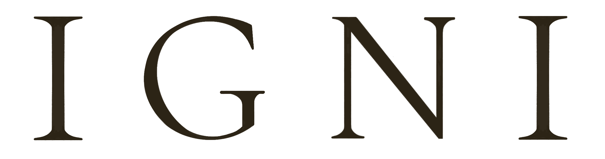

Conscious Consultation
90 分鐘，帶你一步步找到問題的核心
水龍頭打開是灰灰的髒水，你要做的不是換個杯子，而是去檢查水龍頭管線、水塔、甚至是水源處。找到問題的根源，才能對症下藥，改變也才會真正的發生。
帶你一起看見問題的根源，讓你的努力用在對的方向。
諮詢結束後，你將收到一份專屬報告，清楚看見這段對話帶來的轉化。
和雅妃老師聊完後，原本困擾我的事情，就這樣豁然開朗，而且知道下一步該怎麼做，思緒變得很清晰。
科技人
老師讓人感到很安心、可以說出自己真實的感覺。原本很氣的工作上的事，在被理解後，反而可以清楚、理性地處理事情。
餐飲業老闆
這個對話需要誠實與承擔。若你目前只想逃離或合理化，這段對話可能讓你感到不舒服。
線上 Google Meet 進行 · 匯款後填表預約
你需要的是——看清自己站在哪裡，才能決定下一步怎麼走。